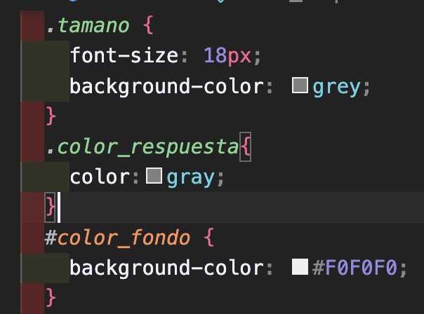
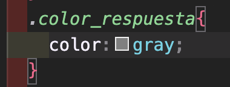
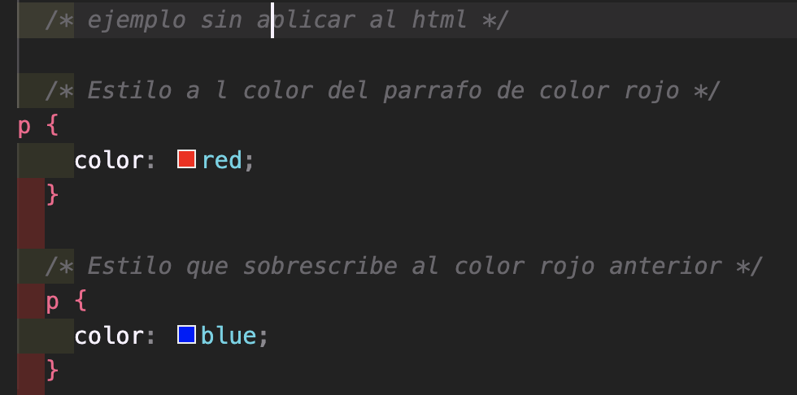
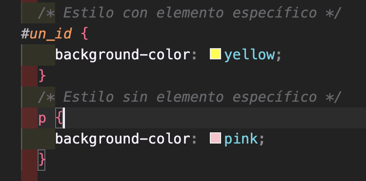

1. Explicar cuantas maneras existen para vincular html con css Hoy se aprendio de tres tipos, el que recuedo primero es el archivo .css, este archivo guarda todo el codigo CSS aplicado a la pagina html, de esta menra creo que es mas ordenado poder aplicar estilos. Luego recuerdo el que se usa directamente en el html con la etiqueta esta lo que hace es incluir codigo de estilos css, directamente en el html. Luego el utilizando el atributo style dentro de una etiqueta, son estilos especificos e individuales.
2. Explicar con sus palabras el conjunto de reglas de CSS (selector , propiedad , valor)
3. Explicar los 4 conceptos importantes con ejemplos ( selectores, herencia , cascada , especificidad
Los selectores en CSS como se indica en el concepto anterior se utilizan para seleccionar y estilizar elementos HTML. como seleccionar una etiqueta (p para párrafos), o más complejos, como seleccionar elementos con una clase (.tamano) o un identificador id (#id_color).
Ejemplos como :
La Herencia es la capacidad de recibir estilos de los elementos de sus padres, indicando que no todos los estilos se heredan
En este ejemplo se especifico .color_respuesta y el ul y el li obtuvieron el estilo del padre
Cascada es el proceso mediante se aplican estilo y son definios desde de arriba hacia abajo
La especificidad es un concepto que determina qué conjunto de reglas se aplicará a un elemento específico cuando hay conflictos entre estilos y este tiene mayor peso.
Ejemplos
